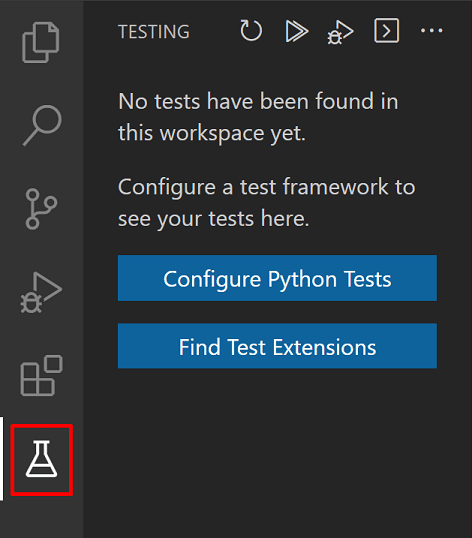
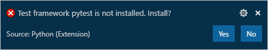
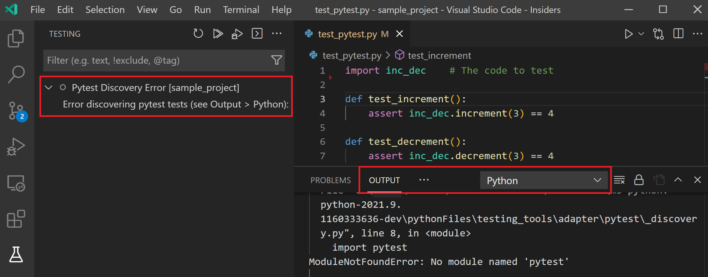
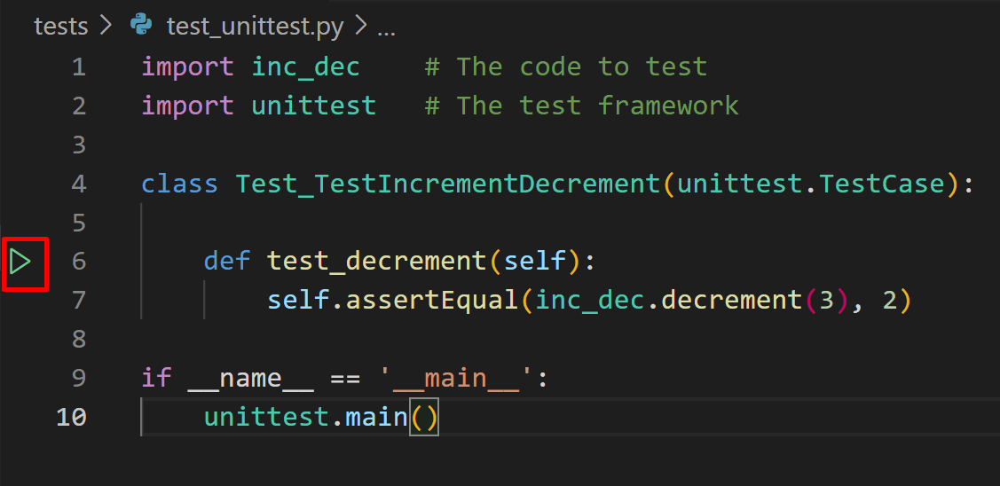
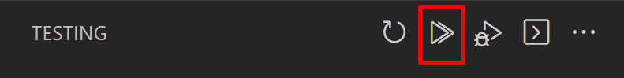
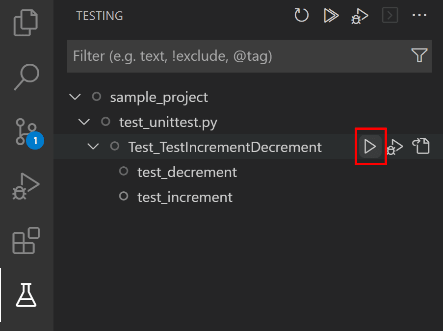
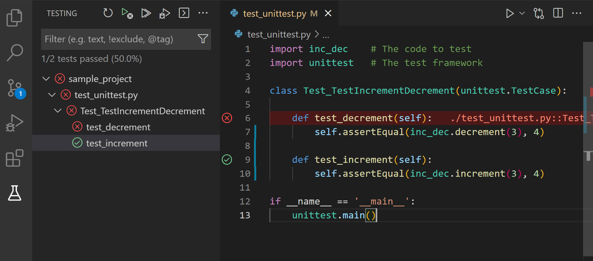
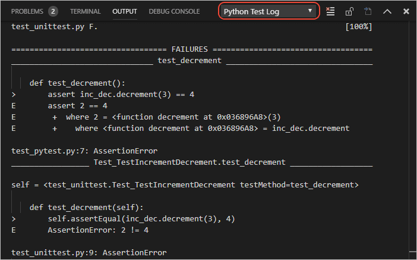
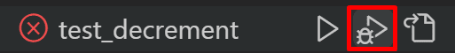

Python testing in Visual Studio Code
The Python extension supports testing with Python's built-in unittest framework and pytest.
A little background on unit testing
(If you're already familiar with unit testing, you can skip to the walkthroughs.)
A unit is a specific piece of code to be tested, such as a function or a class. Unit tests are then other pieces of code that specifically exercise the code unit with a full range of different inputs, including boundary and edge cases.
For example, say you have a function to validate the format of an account number that a user enters in a web form:
def validate_account_number_format(account_string):
# Return False if invalid, True if valid
# ...
Unit tests are concerned only with the unit's interface—its arguments and return values—not with its implementation (which is why no code is shown here in the function body; often you'd be using other well-tested libraries to help implement the function). In this example, the function accepts any string and returns true if that string contains a properly formatted account number, false otherwise.
To thoroughly test this function, you want to throw at it every conceivable input: valid strings, mistyped strings (off by one or two characters, or containing invalid characters), strings that are too short or too long, blank strings, null arguments, strings containing control characters (non-text codes), string containing HTML, strings containing injection attacks (such as SQL commands or JavaScript code), and so on. It's especially important to test security cases like injection attacks if the validated string is later used in database queries or displayed in the app's UI.
For each input, you then define the function's expected return value (or values). In this example, again, the function should return true for only properly formatted strings. (Whether the number itself is a real account is a different matter that would be handled elsewhere through a database query.)
With all the arguments and expected return values in hand, you now write the tests themselves, which are pieces of code that call the function with a particular input, then compare the actual return value with the expected return value (this comparison is called an assertion):
# Import the code to be tested
import validator
# Import the test framework (this is a hypothetical module)
import test_framework
# This is a generalized example, not specific to a test framework
class Test_TestAccountValidator(test_framework.TestBaseClass):
def test_validator_valid_string():
# The exact assertion call depends on the framework as well
assert(validate_account_number_format("1234567890"), True)
# ...
def test_validator_blank_string():
# The exact assertion call depends on the framework as well
assert(validate_account_number_format(""), False)
# ...
def test_validator_sql_injection():
# The exact assertion call depends on the framework as well
assert(validate_account_number_format("drop database master"), False)
# ... tests for all other cases
The exact structure of the code depends on the test framework you're using, and specific examples are provided later in this article. In any case, as you can see, each test is simple: invoke the function with an argument and assert the expected return value.
The combined results of all the tests is your test report, which tells you whether the function (the unit), is behaving as expected across all test cases. That is, when a unit passes all of its tests, you can be confident that it's functioning properly. (The practice of test-driven development is where you actually write the tests first, then write the code to pass increasingly more tests until all of them pass.)
Because unit tests are small, isolated pieces of code (in unit testing you avoid external dependencies and use mock data or otherwise simulated inputs), they're quick and inexpensive to run. This characteristic means that you can run unit tests early and often. Developers typically run unit tests even before committing code to a repository; gated check-in systems can also run unit tests before merging a commit. Many continuous integration systems also run unit tests after every build. Running the unit test early and often means that you quickly catch regressions, which are unexpected changes in the behavior of code that previously passed all its unit tests. Because the test failure can easily be traced to a particular code change, it's easy to find and remedy the cause of the failure, which is undoubtedly better than discovering a problem much later in the process!
For a general background on unit testing, read Unit testing on Wikipedia. For useful unit test examples, you can review https://github.com/gwtw/py-sorting, a repository with tests for different sorting algorithms.
Example test walkthroughs
Python tests are Python classes that reside in separate files from the code being tested. Each test framework specifies the structure and naming of tests and test files. Once you write tests and enable a test framework, VS Code locates those tests and provides you with various commands to run and debug them.
For this section, create a folder and open it in VS Code. Then create a file named inc_dec.py with the following code to be tested:
def increment(x):
return x + 1
def decrement(x):
return x - 1
With this code, you can experience working with tests in VS Code as described in the sections that follow.
Configure tests
Once you have the Python extension installed and a Python file open within the editor, a test beaker icon will be displayed on the VS Code Activity bar. The beaker icon is for the Test Explorer view. When opening the Test Explorer, you will see a Configure Tests button if you don't have a test framework enabled. Once you select Configure Tests, you will be prompted to select a test framework and a folder containing the tests. If you're using unittest, you will also be asked to select the file glob pattern used to identify your test files.

You can configure your tests anytime by using the Python: Configure Tests command from the Command Palette. You can also configure testing manually by setting either python.testing.unittestEnabled or python.testing.pytestEnabled to true. Each framework also has specific configuration settings as described under Test configuration settings for their folders and patterns.
If both frameworks are enabled, then the Python extension will only run pytest.
When you enable a test framework, VS Code prompts you to install the framework package if it's not already present in the currently activated environment:

Create tests
Each test framework has its own conventions for naming test files and structuring the tests within, as described in the following sections. Each case includes two test methods, one of which is intentionally set to fail for the purposes of demonstration.
Tests in unittest
Create a file named test_unittest.py that contains a test class with two test methods:
import inc_dec # The code to test
import unittest # The test framework
class Test_TestIncrementDecrement(unittest.TestCase):
def test_increment(self):
self.assertEqual(inc_dec.increment(3), 4)
def test_decrement(self):
self.assertEqual(inc_dec.decrement(3), 4)
if __name__ == '__main__':
unittest.main()
Tests in pytest
Create a file named test_pytest.py that contains two test methods:
import inc_dec # The code to test
def test_increment():
assert inc_dec.increment(3) == 4
def test_decrement():
assert inc_dec.decrement(3) == 4
Test discovery
By default, the Python extension attempts to discover tests once you enable a framework. You can trigger test discovery at any time using the Test: Refresh Tests command.
python.testing.autoTestDiscoverOnSaveEnabled is set to true by default, meaning that test discovery is also performed automatically whenever you add, delete, or update any Python file in the workspace. To disable this feature, set the value to false. You will need to reload the window for this setting to take effect.
Test discovery applies the discovery patterns for the current framework (which can be customized using the Test configuration settings). The default behavior is as follows:
-
python.testing.unittestArgs: Looks for any Python (.py) file with "test" in the name in the top-level project folder. All test files must be importable modules or packages. You can customize the file matching pattern with the-pconfiguration setting, and customize the folder with the-tsetting. -
python.testing.pytestArgs: Looks for any Python (.py) file whose name begins with "test_" or ends with "_test", located anywhere within the current folder and all subfolders.
Tip: Sometimes tests placed in subfolders aren't discovered because such test files cannot be imported. To make them importable, create an empty file named
__init__.pyin that folder.
If the test discovery succeeds, you'll see tests listed in the Test Explorer:

If discovery fails (for example, the test framework isn't installed or you have a syntax error in your test file), you'll see an error message displayed in the Test Explorer. You can check the Python output panel to see the entire error message (use the View > Output menu command to show the Output panel, then select Python from the dropdown on the right side).

Once VS Code recognizes tests, it provides several ways to run those tests as described in Run tests.
Run tests
You can run tests using any of the following actions:
-
With a test file open, select the green run icon that is displayed in the gutter next to the test definition line, as shown in the previous section. This command runs only that one method.

-
From the Command Palette, by running any of the following commands:
- Test: Run All Tests - Runs all tests that have been discovered.
- Test: Run Tests in Current File - Runs all tests in a file that that is open in the editor.
- Test: Run Test at Cursor - Runs only the test method under your cursor in the editor.
-
From the Test Explorer:
-
To run all discovered tests, select the play button at the top of Test Explorer:

-
To run a specific group of tests, or a single test, select the file, class, or test, then select the play button to the right of that item:

-
You can also run a selection of tests through the Test Explorer. To do that, Ctrl+Click (or Cmd+Click on macOS) on the tests you wish to run, right-click on one of them and then select Run Test.
-
After a test run, VS Code displays results directly in the editor as gutter decorations. Failed tests will also be highlighted in the editor, with a Peek View that displays the test run error message and a history of all of the tests' runs. You can press Escape to dismiss the view, and you can disable it by opening the User settings (Preferences: Open Settings (UI) command in the Command Palette) and changing the value of the Testing: Automatically Open Peek View setting to never.
In the Test Explorer, results are shown for individual tests and any classes and files containing those tests.

VS Code also shows test results in the Python Test Log output panel.

Run tests in parallel
Support for running tests in parallel with pytest is available through the pytest-xdist package. To enable parallel testing:
-
Open the integrated terminal and install the
pytest-xdistpackage. For more details, refer to the project's documentation page.For Windows
py -3 -m pip install pytest-xdistFor macOS/Linux
python3 -m pip install pytest-xdist -
Next, create a file named
pytest.iniin your project directory and add the content below, specifying the number of CPUs to be used. For example, to set it up for 4 CPUs:[pytest] addopts=-n4Or, if you are using a
pyproject.tomlfile[tool.pytest.ini_options] addopts="-n 4" -
Run your tests, which will now be run in parallel.
Debug tests
You might occasionally need to step through and analyze tests in the debugger, either because the tests themselves have a code defect you need to track down or in order to better understand why an area of code being tested is failing.
For example, the test_decrement functions given earlier are failing because the assertion itself is faulty. The following steps demonstrate how to analyze the test:
-
Set a breakpoint on the first line in the
test_decrementfunction. -
Right-click on the gutter decoration next to the function definition and select Debug Test, or select the Debug Test icon next to that test in the Test Explorer. VS Code starts the debugger and pauses at the breakpoint.

-
In the Debug Console panel, enter
inc_dec.decrement(3)to see that the actual result is 2, whereas the expected result specified in the test is the incorrect value of 4. -
Stop the debugger and correct the faulty code:
# unittest self.assertEqual(inc_dec.decrement(3), 2) # pytest assert inc_dec.decrement(3) == 2 -
Save the file and run the tests again to confirm that they pass, and see that the gutter decorations also indicate passing status.
Note: Running or debugging a test does not automatically save the test file. Always be sure to save changes to a test before running it, otherwise you'll likely be confused by the results because they still reflect the previous version of the file!
You can use the following commands from the Command Palette to debug tests:
- Test: Debug All Tests - Launches the debugger for all tests in your workspace.
- Test: Debug Tests in Current File - Launches the debugger for the tests you have defined in the file you have open in the editor.
- Test: Debug Test at Cursor - Launches the debugger only for the method where you have your cursor focused on the editor. You can also use the Debug Test icons in Test Explorer to launch the debugger for all tests in a selected scope and all discovered tests.
You can also change the default behavior of clicking on the gutter decoration to debug tests instead of run, by changing the testing.defaultGutterClickAction setting value to debug in your settings.json file.
The debugger works the same for tests as for other Python code, including breakpoints, variable inspection, and so on. To customize settings for debugging tests, you can specify "purpose": ["debug-test"] in the launch.json file in the .vscode folder from your workspace. This configuration will be used when you run Test: Debug All Tests, Test: Debug Tests in Current File and Test: Debug Test at Cursor commands.
For example, the configuration below in the launch.json file disables the justMyCode setting for debugging tests:
{
"name": "Python: Debug Tests",
"type": "python",
"request": "launch",
"program": "${file}",
"purpose": ["debug-test"],
"console": "integratedTerminal",
"justMyCode": false
}
If you have more than one configuration entry with "purpose": ["debug-test"], the first definition will be used since we currently don't support multiple definitions for this request type.
For more information on debugging, see Python debugging configurations and the general VS Code Debugging article.
Test commands
Below are all the supported commands for testing with the Python extension in VS Code:
| Command Name | Description |
|---|---|
| Python: Configure Tests | Configure the test framework to be used with the Python extension. |
| Test: Clear All Results | Clear all tests statuses, as the UI persists test results across sessions. |
| Test: Debug Failed Tests | Debug tests that failed in the most recent test run. |
| Test: Debug Last Run | Debug tests that were executed in the most recent test run. |
| Test: Debug Test at Cursor | Debug the test method where you have your cursor focused on the editor. Similar to Python: Debug Test Method... on versions prior to 2021.9. |
| Test: Debug Tests in Current File | Debug tests in the file that is currently in focus on the editor. |
| Test: Go to Next Test Failure | If the error peek view is open, open and move to the peek view of the next test in the explorer that has failed. |
| Test: Go to Previous Test Failure | If the error peek view is open, open and move to the peek view of the previous test in the explorer that has failed. |
| Test: Peek Output | Opens the error peek view for a test method that has failed. |
| Test: Refresh Tests | Perform test discovery and updates the Test Explorer to reflect any test changes, addition, or deletion. Similar to Python: Discover Tests on versions prior to 2021.9. |
| Test: Rerun Failed Tests | Run tests that failed in the most recent test run. Similar to Python: Run Failed Tests on versions prior to 2021.9. |
| Test: Rerun Last Run | Debug tests that were executed in the most recent test run. |
| Test: Run All Tests | Run all discovered tests. Equivalent to Python: Run All Tests on versions prior to 2021.9. |
| Test: Run Test at Cursor | Run the test method where you have your cursor focused on the editor. Similar to Python: Run Test Method... on versions prior to 2021.9. |
| Test: Run Test in Current File | Run tests in the file that is currently in focus on the editor. Equivalent to Python: Run Current Test File on versions prior to 2021.9. |
| Test: Show Output | Open the output with details of all the test runs. Similar to Python: Show Test Output on versions prior to 2021.9. |
| Testing: Focus on Test Explorer View | Open the Test Explorer view. Similar to Testing: Focus on Python View on versions prior to 2021.9. |
| Test: Stop Refreshing Tests | Cancel test discovery. |
Test configuration settings
The behavior of testing with Python is driven by general UI settings provided by VS Code, and settings that are specific to Python and to whichever framework you've enabled.
General UI settings
The settings that affect the UI of the testing features are provided by VS Code itself, and can be found in the VS Code Settings editor when you search for "Testing".
General Python settings
| Setting (python.testing.) |
Default | Description |
|---|---|---|
| autoTestDiscoverOnSaveEnabled | true |
Specifies whether to enable or disable auto run test discovery when saving a test file. You may need to reload the window after making changes to this setting for it to be applied. |
| cwd | null | Specifies an optional working directory for tests. |
| debugPort | 3000 |
Port number used for debugging of unittest tests. |
| promptToConfigure | true |
Specifies whether VS Code prompts to configure a test framework if potential tests are discovered. |
unittest configuration settings
| Setting (python.testing.) |
Default | Description |
|---|---|---|
| unittestEnabled | false |
Specifies whether unittest is enabled as the test framework. The equivalent setting for pytest should be disabled. |
| unittestArgs | ["-v", "-s", ".", "-p", "*test*.py"] |
Arguments to pass to unittest, where each element that's separated by a space is a separate item in the list. See below for a description of the defaults. |
The default arguments for unittest are as follows:
-vsets default verbosity. Remove this argument for simpler output.-s .specifies the starting directory for discovering tests. If you have tests in a "test" folder, change the argument to-s test(meaning"-s", "test"in the arguments array).-p *test*.pyis the discovery pattern used to look for tests. In this case, it's any.pyfile that includes the word "test". If you name test files differently, such as appending "_test" to every filename, then use a pattern like*_test.pyin the appropriate argument of the array.
To stop a test run on the first failure, add the fail fast option "-f" to the arguments array.
See unittest command-line interface for the full set of available options.
pytest configuration settings
| Setting (python.testing.) |
Default | Description |
|---|---|---|
| pytestEnabled | false |
Specifies whether pytest is enabled as the test framework. The equivalent setting for unittest should be disabled. |
| pytestPath | "pytest" |
Path to pytest. Use a full path if pytest is located outside the current environment. |
| pytestArgs | [] |
Arguments to pass to pytest, where each element that's separated by a space is a separate item in the list. See pytest command-line options. |
You can also configure pytest using a pytest.ini file as described on pytest Configuration.
Note If you have the pytest-cov coverage module installed, VS Code doesn't stop at breakpoints while debugging because pytest-cov is using the same technique to access the source code being run. To prevent this behavior, include
--no-covinpytestArgswhen debugging tests, for example by adding"env": {"PYTEST_ADDOPTS": "--no-cov"}to your debug configuration. (See Debug Tests above about how to set up that launch configuration.) (For more information, see Debuggers and PyCharm in the pytest-cov documentation.)
See also
- Python environments - Control which Python interpreter is used for editing and debugging.
- Settings reference - Explore the full range of Python-related settings in VS Code.